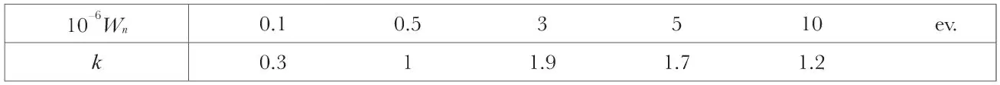
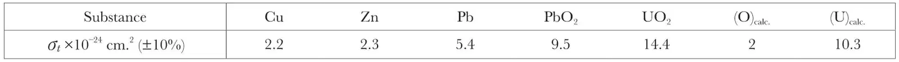
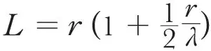
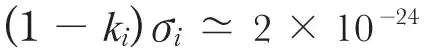
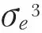
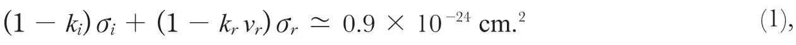
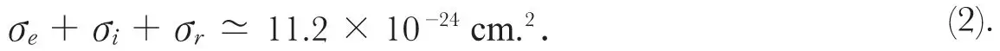

中文
中文L. Goldstein et al.
Editor’s Note
Here Goldstein, Rogazinski and Walen describe experiments measuring how neutrons interact with uranium nuclei. They used neutrons from a polonium-beryllium source to irradiate samples of lead oxide and uranium oxide, and detected neutrons with an ionization chamber. They are able to estimate the “cross-section”—the “size” of the nuclei as seen by the neutrons—for neutrons that are scattered with or without a change in energy. As they noted, their cross-section was somewhat higher than previous estimates, implying that neutrons can travel a little less far than thought in uranium. This suggested, in turn, that a critical mass for a chain reaction might also be smaller than previously suspected. 中文
THE work to be described concerns only fast neutrons, and its object is the study of their scattering by uranium and the possible neutron emission which accompanies the fission of the nucleus. 中文
The experiments were performed with a polonium plus beryllium source equivalent to3 mC. of radon plus beryllium. An ionization chamber surrounded with 2.5 cm. lead, filled with hydrogen at a pressure of 35 atm., was used as a neutron detector. The insulated electrode was connected to a compensated electrometer valve1, the grid leak being 1011 ohms and the sensitivity 1.2×10－15 amp./div. on the scale. 中文
We have employed two experimental arrangements in which the source was placed (1) between the chamber and the substance used as scatterer, the nature and the thickness of which were variable; (2) in the centre of a cube of 16 cm. side, alternately filled with uranium oxide (specific gravity, d=4.0) and lead oxide (compressed to d=3.8). 中文
The first type of experiment gave us the total scattering cross-section, which is, as can be shown, σt=σe+kiσi; for uranium oxide σt=σe+kiσi+krvrσr, where σe, σi, σr are respectively the average cross-sections of elastic and inelastic scattering and of fission; vr is the average number of neutrons produced per fission; ki and kr are the average efficiency factors of the chamber for the neutrons having undergone an inelastic collision or for the neutrons resulting from fission. The efficiency for the direct neutrons was taken to be unity, k=1. For neutrons elastically scattered by nuclei of sufficiently high mass, ke=k=1. We have calculated k, taking into account the size of the chamber, the cross-section for proton projection, etc. The spectrum of polonium plus beryllium neutrons has been considered2 to contain 50 percent of neutrons of Wn less than 105 ev. We thus obtain:

In view of a possible extrapolation that would give σe+kiσi for uranium, we have in the same way experimented with scattering by lead oxide, lead, copper and zinc. 中文
The results of the first experiment were as follows:

The values for uranium and oxygen are calculated on the assumption of the additivity of the cross-sections in lead oxide and uranium oxide. 中文
The second experiment gives us, in the first approximation, the absorption coefficient (1-ki)σi+(1-krvr)σr, the value of σe being only as a correction term in the determination of the mean free path λ and the average distance L travelled by the neutrons before they escape from the whole mass, which is supposed spherical, the radius being r and

. This experiment, taking into account the results of the previous experiments, gives for lead,
cm.2. Assuming that σi can reach 30 percent of
, this gives ki(≃)0 中文
With the exception of uranium, for which one must consider not only σi, but also vrσr, it is probable that σt is not very different from σe because of the small value of ki. 中文
In the case of uranium, however, we have,

or, by adding to σt, thus eliminating ki and kr ,

If it is supposed that each fission produces radioelements, the cross-section measured by Joliot, and by Anderson et al.4 would be identical with σr, which they found to be σr≃10－25cm.2. In this case we see that (σe + σi) is much greater (≃11.1×10－24 cm.2) than that given by an extrapolation (≃6×10－24 cm.2) 中文
On the other hand, it results from (1) that, if the value of σi is comparable to that of the next elements (1 to 2×10－24 cm.2), vr can, with plausible assumptions as to the coefficients ki and kr, take variable values, for example, from 1 to 5, or even more. 中文
One can see that, so long as σi is not determined separately, the experiments of the type described do not allow us to determine vr and σr (characteristics of the fission), or to conclude that neutrons are liberated; or a fortiori, to form a conclusion as to the possibility of chain reactions, contrary to the results of similar experiments5. 中文
The only suitable case for showing with certainty, by means of an ionization chamber, the production of neutrons, would be that in which, by the use of a sufficient quantity of uranium, the chain mechanism would give multiplication of neutrons, if such chain is realizable6. 中文
In conclusion, it results from these experiments with neutrons of polonium plus beryllium that the sum of the cross-sections σe+σi+σr for the uranium nucleus is (11.2±1.5)10－24 cm.2. This value implies a mean path in uranium much shorter than that usually admitted; this suggests that smaller masses than those hitherto expected might be used to show chain fission. 中文
(144, 201-202; 1939)
La. Goldstein, A. Rogozinski and R. J. Walen: Laboratoire Curie, Institut du Radium, Paris, 5, July 13.
References:
1. Rogozinski, A., C.R., 208, 427 (1939).
2. Auger, P., J. Phys. Radium, 4, 719 (1933).
3. Seaborg, G. F., Gibson, G. E., and Graham, D. C., Phys, Rev., 52, 408 (1937).
4. Joliot, F., J. Phys. Radium, 10, 159 (1939). Anderson, H. L., Booth, E. T., Dunning, J. R., Fermi, E., Glasoe, G. N., and Slack, F. G., Phys. Rev., 55, 511 (1939).
5. Haenny, C., and Rosenberg, A., C.R., 208, 898 (1939).
6. v. Halban, H., Joliot, F., and Kowarski, L., Nature, 143, 680 (1939). Perrin, F., C.R., 208, 1394, 1573 (1939).